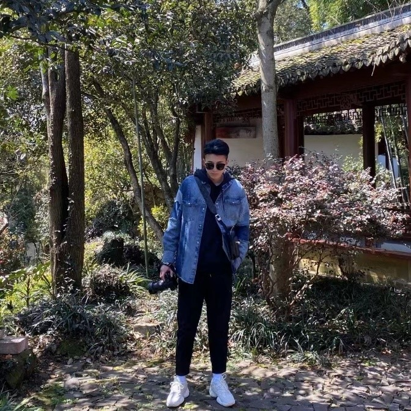
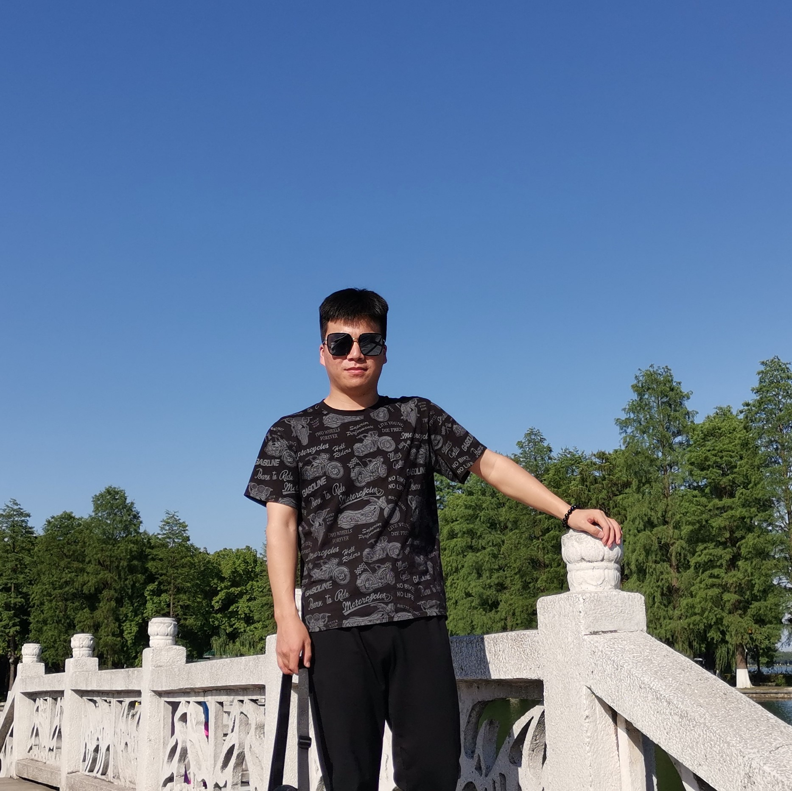
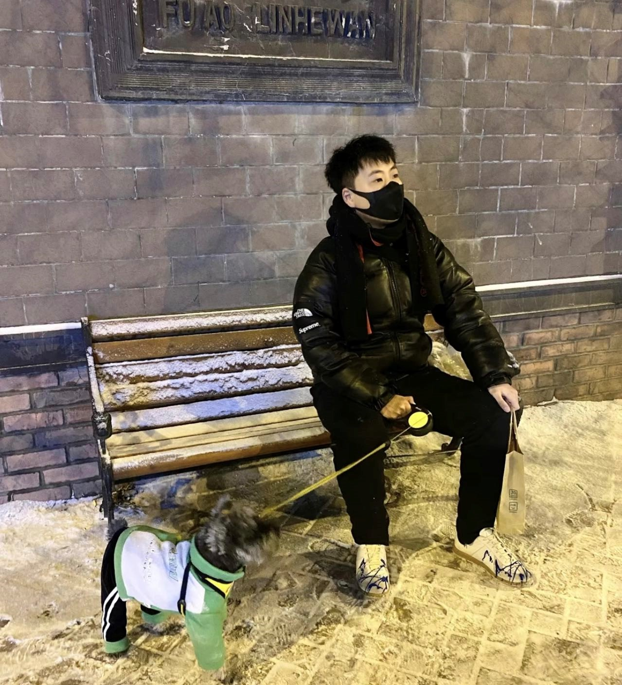
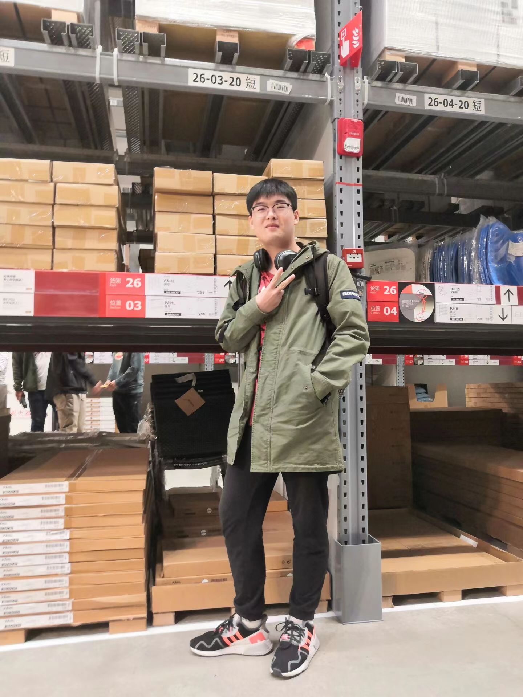

Postgraduate Student
Jiaqing Zhao(赵嘉卿)

赵嘉卿，浙江东阳人，杭州电子科技大学管理学院研究生，主要研究方向为公共安全心理和行为。座右铭：有志者、事竟成，破釜沉舟，百二秦关终属楚；苦心人、天不负，卧薪尝胆，三千越甲可吞吴。
Wenhao Miao(缪文豪)

缪文豪，来自江西萍乡，为人正直，积极向上，喜欢运动和旅行。座右铭，业精于勤荒于嬉，行成于思毁于随。
Jiayi Wang(汪嘉毅)

汪嘉毅，杭州电子科技大学研究生，研究方向为网络安全。座右铭：读书无疑者，须教有疑，有疑者却要无疑，到这里方是上进。
Jingyu Hao(赫静宇)

我叫赫静宇，本人热情随和，活泼开朗，特别喜欢结交新朋友，众多的朋友使我倍感富有，平时的爱好就是听音乐，看电影，跟朋友一起出去旅游。我特别喜欢的一句话就是“人往高处走，水往低处流”，在平时的工作学习中，我会努力做到最好，在实践中提升自己能力，不断朝着更高的目标前进。
Xinyue Wang(王鑫月)
王鑫月，来自浙江绍兴，性格开朗乐观，待人真诚；学习认真，工作努力；喜欢阅读，在书中学到了许多人生哲理；最后，永远仰望星空，脚踏实地，期待在未来遇见更好的自己。